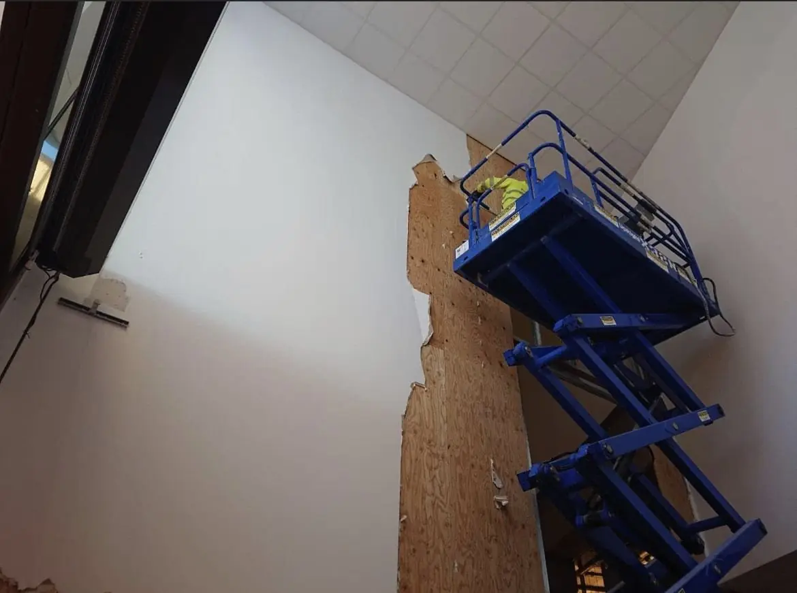
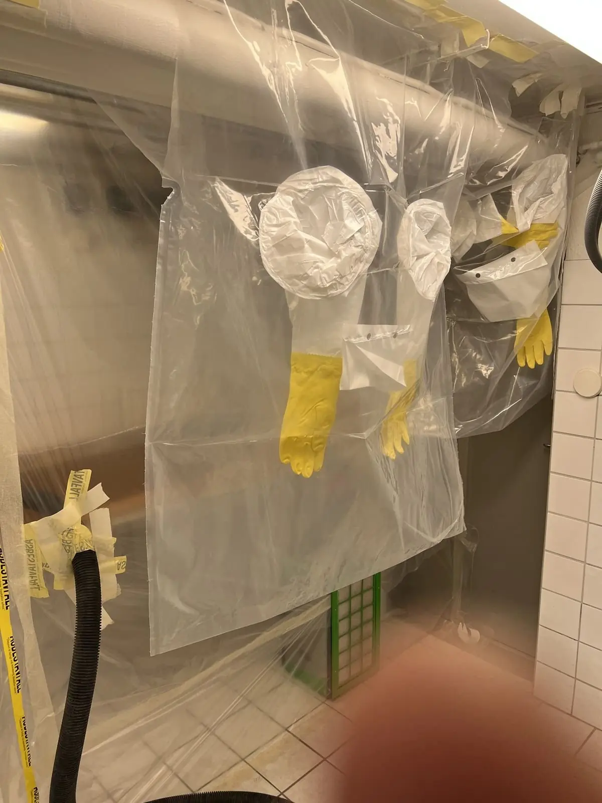

Projekt
Bilder från våra arbetsplatser: stambyten, lokaler, lägenheter och hallar.
Så arbetar vi
Så går ett uppdrag till
- 1

Förfrågan
Beskriv jobbet i formuläret eller ring oss. Vi svarar inom 24 timmar, även på helger.
- 2

Provtagning
Vi går igenom material och konstruktion och tar prover, så att inget rasar och inga skadliga ämnen sprids.
- 3

Offert och plan
Med prover och ritningar som grund planerar vi ett säkert arbete enligt gällande regler och lagar.
- 4

Utförande
Vi håller dig uppdaterad under hela processen och sorterar avfallet för återvinning.